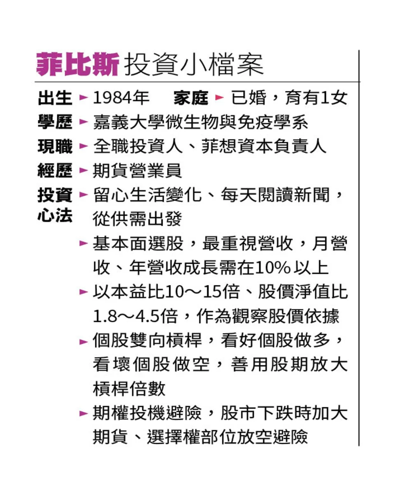

每天醒來第一件事就是做投資功課 億級達人曝買股3心法
出處
https://tw.news.yahoo.com/10%E5%B9%B4%E6%BB%BE%E4%B8%8A%E5%84%843-%E6%AF%8F%E5%A4%A9%E9%86%92%E4%BE%86%E7%AC%AC-%E4%BB%B6%E4%BA%8B%E5%B0%B1%E6%98%AF%E5%81%9A%E6%8A%95%E8%B3%87%E5%8A%9F%E8%AA%B2-%E5%84%84%E7%B4%9A%E9%81%94%E4%BA%BA%E6%9B%9D%E8%B2%B7%E8%82%A13%E5%BF%83%E6%B3%95-215857205.html
許瀞文
2023年12月7日

去年底東元股價淨值比不到1倍，菲比斯大舉進場。
過去10年，每年都在PTT股版上分享對帳單、資產呈倍數成長，被網友封為「菲神」的菲比斯，2013年從10萬元進場，如今累積億元身價。他說，自己的獲利金三角是從市場供需出發，以基本面選股，再搭配股期、期權槓桿操作；尤其日日寫交易日誌、月月檔檔檢查營收變化的紀律，讓他股海翻身。

菲比斯強調，他的投資方式是「看到事件發生再來反應」，所以必須留心推敲生活周遭發生的事件。時至今日，他每天醒來的第一件事是打開財經新聞臺，接著讀報；勤跑公司法說、鑽研財報數據，更是日常生活，像是每月10日公司公佈營收，3、5、8、11月公佈季報及年報，他都會不厭其煩地瀏覽所有個股變化，進而汰弱留強。
心法一、事件操作
菲比斯以近期操作的重電股為例，「近幾年臺灣不斷有跳電情況，去年底新聞報導臺電韌電計畫，10年內要投入5600多億元，看新聞就能知道與該計畫相關公司，包含士電、東元、中興電、亞力等7家公司。」他因此開始仔細閱讀這些公司的財報。
心法二、財報挑股
「讀了財報才發現，東元實在太便宜，股價28元，但每股淨值卻有35元；亞力也是，股價25元，去年第二季財報公佈每股盈餘為0.66元，且10月營收比第二季最高的月份還高，年增率達75%，以第二季每股盈餘乘上4季，推估本益比不到10倍，都是可以買入的安全價位。」菲比斯解釋，財報的眾多數據中，他最在意的就是營收、營益率、毛利率、每股盈餘、本益比及股價淨值比。
其中，他又最重視營收成長及來源，「一家公司業績轉好，或該產業需求大於供給，營收是檢核業績最具體的方式。年增率最好要10%，且每月營收持續增加，因為營收增加，營益率、毛利率也會跟著上升。」
心法三、進出有據
菲比斯透露，經過多年的實戰經驗，他通常以本益比10至15倍、股價淨值比1.8至4.5倍，作為觀察股價依據，像是股價淨值比大於4.5倍就是偏貴價格。至於股價低於淨值，是難得的撿便宜機會，去年底東元股價淨值比甚至不到1倍，菲比斯因此大舉進場。
談到賣股時機，除了股價淨值比，見到營收衰退、公司大股東不正常賣股，菲比斯也會選擇退場、或者反向放空。他舉例，今年4月起亞力營收成長力道不如前幾個月、5月營收還較4月衰退，於是他慢慢賣出、獲利了結，半年時間股價大漲一倍。
「賺錢的關鍵，說穿了就是供需，投資是找出市場的供需面，就能獲利。」每年都在PTT股票版上分享自己的對帳單，資產年年倍數成長，被網友封為「菲神」的菲比斯，為自己10年資產成長超過億元下了一個註解。
2007年菲比斯才剛大學畢業，對自己未來摸不著頭緒，因為一張期貨商徵人的廣告，而踏入投資市場，原本大學就讀生技、對財報一竅不通，靠著自學、下苦功觀察市場，找到自己獲利的方法；之後從10萬元資金開始進入市場，如今投資資產超過億元，「研究公司基本面、個股多空操作、期權避險投機，成為我投資獲利的金三角。」他強調。
菲比斯提到，挑選個股前，應先觀察市場上現在的供給與需求面。以2021年長榮海運貨輪擱淺在蘇伊士運河窄處為例，蘇伊士運河是歐亞之間重要的海運廊道，佔全世界海運量14%，而長榮海運船身長400公尺，難以自立脫困，導致越來越多貨輪擠在蘇伊士灣。
「更多的貨物、更久的航程、較少的通運量，這三因素點燃運價狂噴的引信，這就是供需。」菲比斯解釋，當時長榮股價不過40元，他與身邊好友大力買進，股價200元時全數出場，而他用長榮賺到的獲利，買下現在市價億元的家。
特別的是，當時萬海航運的股價比航運龍頭股長榮整整多了100元，菲比斯指出，這是市場上的股權供需。萬海當時的股本是280.61億元，長榮的股本則是529.08億元，「再次回到供需面，因為萬海的股本小，流通張數也較少，購買力對股價的影響更顯著，也因此股本小的股票跟股本大的股票相比，波動更劇烈。」他解釋。